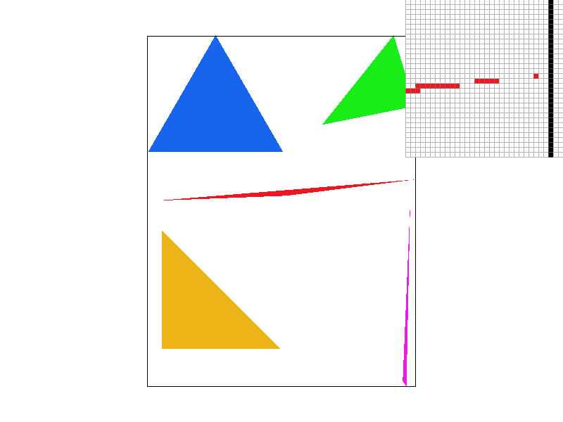

Back to Homepage
Overview
In this project I implemented a rasterizer for SVGs, with capabilities to draw simple triangles, supersampling for antialiasing, transforms, linear interpolations through barycentric coordinates, and texture mapping through pixel sampling. This project was done in a way that it constructs on itself, not only allowing us to understand the basics such as a (not so) simple triangle rasterization, but also understand how different concepts, such as linear interpolations and texture mapping, relate to each other.
============================================================================================
Task 1: Drawing Single-Color Triangles
In the first part of the project, we had to modify the rasterize_triangle function in order to draw triangles on the screen based
on the coordinates of its vertices. Here's how I did it:
- Determine the extreme x and y values between the vertices. This is used to define the bounding box that we will run through when filling the inside of the triangle.
- Adding a 0.5 offset to the current tested pixel so we can compare pixels by its center.
-
For each vertice, check if it is to the left or the right of the line that connects the other two vertices with the function
\(N(a) = (x_b - x_a)*(y_c - y_a) - (y_b - y_a)*(x_c - x_a)\). This will allow us to check whether the vertices were given in clockwise or counter-clockwise order. - Run trough all the pixels in the bounding box. For each pixel, determine the values of \(L_0, L_1\) and \(L_2\), which we get through the formulas \(L(x, y) = -(x - x_0)(y_1 - y_0) + (y - y_0)(x_1 - x_0)\). If the values of \(L_0, L_1\) and \(L_2\) are all bigger or equal to 0, then the pixel is inside the triangle. The order of \(P_0\) and \(P_1\) matter as they form a vector between them, and the normal vector is utilized to determine whether a pixel is inside the triangle. The value of N calculated above is used to set the order of \(P_0\) and \(P_1\).
- If a point is determined to be inside the triangle, fill that pixel in the sample buffer with the given color.

basic/test4.svg with pixel inspector showing thin point of a triangle corner, which seems disconnected from the rest of the triangle |
============================================================================================
Task 2: Antialiasing by Supersampling
Next in the project, we built on top of the rasterize_triangle function in order to implement supersampling. In supersampling,
we increase the sample rate, which means that instead of checking if the center of the pixel is inside the triangle once and apply the absolute
color to the whole pixel, we divide the pixel in \(n\) squares, \(n\) being equal to the sample rate, and test whether the center of these
smaller squares are inside the triangle. We then average the color of the pixel based on how many of the sub-samples are inside the pixel.
This leads to creating a gradient around the edges instead of the hard jaggies we found in Task 1, creating a smoother image. The higher the
sample rate, the smoother the image, since you are testing more points inside the pixel.
In order to implement supersampling, a few changes had to be made:
-
The size of the sample buffer had to be increased to match the increased amount of points being tested. This was achieved by
multiplying the sample buffer size by the sample rate. However, we want our final image to be the same size as a not-supersampled
image, therefore we must downsize the buffer in the
resolve_to_framebufferfunction. More details on that below. -
Adding two more inner loops to the part of the
rasterize_trianglealgorithm that runs through the pixels in the bounding box. This allows us to run through the sub-squares of each pixel. Since the pixels are being divided in \(n\) uniformely distributed squares, we must adjust the step of the function to increase by \(1 / \sqrt{\text{sampling_rate}}\). The resized sample buffer allows us to save the values for each sub-sample. -
Modify the
resolve_to_framebufferfunction in order to downsize the buffer. This is where we average the pixel color based on the sample rate. We iterate over the sample buffer, adding up the values for each pixel's sub-samples, and average that by the number of sub-samples. We then apply that recalculated color value to the whole pixel that is drawn on the screen.
basic/test4.svg with different
sample rates with the pixel inspector targeting the same area as illustrated in Task 1:
|
|
|
|
|
|
In the images above, we can clearly see that the image looks smoother as we increase the sample rate. Since more points inside the pixel are being tested, instead of just the center, more pixels that are only partially inside the triangle are being represented, which also leads to pixels that looked disconnected in the not-supersampled image connect to the rest of the triangle. By averaging the color, we make sure that the lines look softer than it would be if we only applied the absolute color value to the edge pixels.
============================================================================================
Task 3: Transforms
To apply transforms, we simply used the translation, rotation and scale matrices. These were applied to the cubeman to make he appear confused, scratching his head with his hand on his hip, as shown below.
|
|
============================================================================================
Task 4: Barycentric coordinates
The barycentric coordinate system is, as the name states, a coordinate system commonly used for triangles where the coordinates for a given
point inside a triangle are relative to the vertices. Each coordinate (\(\alpha, \beta, \gamma\)) represents the point's relative placement
to each vertice. The equation that describes this relationship is \(P = \alpha\cdot P_0 + \beta\cdot P_1 + \gamma\cdot P_2\). In this task,
we utilized barycentric coordinates in order to apply gradients to pixels inside a triangle through linear interpolation. Each vertice was
assigned its own color, and the pixels inside should have their color assigned by calculating their relative positioning to each vertice and
obtaining the sum of the weighted colors. This provides each pixel a color value that is a blend of the three colors. The images below show
a simple example of linear interpolation in a triangle, and the result obtained with svg/basic/test7.svg.
|
|

|
============================================================================================
Task 5: "Pixel sampling" for texture mapping
In the most simple way to describe, pixel sampling is mapping a texture to a pixel on the screen. Since the texture and the pixels are on different coordinate systems, we have to utilize a method to map a color from a texture to the pixel. In this part of the assignment, we will be applying two methods: nearest-pixel sampling and bilinear interpolation.
Nearest-pixel sampling is the simpler method. Like the name suggests, it consists of mapping the color from the nearest texel to the pixel. First we must obtain the \((u,v)\) coordinates that refer to the \((x,y)\) coordinates of the pixel. We do this by obtaining the barycentric coordinates of the pixel, since it is relative to the triangle. Then, we simply round the \((u,v)\) coordinates in order to find the value of the nearest texel, and map that to the pixel.
Bilinear interpolation is similar to nearest-pixel, but instead of mapping only the nearest texel color, we get the values of the four nearest texels,
and use interpolation to determine the value to be mapped. To get the four nearest texels, we must apply floor() and ceil()
to the \((u,v)\) coordinates. We then interpolate the values to obtain the weighted average color, which is mapped to the pixel.
In order to compare the two methods, the images below were mapped with both methods at sample rates of 1 and 16 samples per pixel:
|
|
|

|
|
As we can see in the images above, the bilinear approach did much better than the nearest-pixel when the sample rate was 1, with better defined and smoother letters. This is still true when the sample rate was increased to 16, but much more subtle since on larger resolutions, the increased amount of samples around a pixel make averaging the color value less impactful. However, it is possble to notice that the bilinear has better defined letters, with less jaggies. This comparison shows that in lower resolution images, the differences in bilinear and nearest-pixel sampling are more visible, this difference being quite subtle on larger samples. Since bilinear is a much more resource-heavy approach, not only sampling four times the amount of the nearest-pixel but also applying interpolations, perhaps opting for the simpler nearest-pixel on larger images can be more resource-effective.
============================================================================================
Link to Github Pages: https://cal-cs184-student.github.io/project-webpages-sp23-Bilbia/proj1/index.html